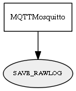

Global overview
All modules
All variables
All commands
Mission files
Pipelines
Variable: SAVE_RAWLOG
Variable info:
Variable name
Short description
Who publishes it?
Who subscribes to it?
SAVE_RAWLOG
Commands module Rawlog-grabber to start/stop saving data to rawlog file
MQTTMosquitto
Variable graph:

Detailed description:
Commands module Rawlog-grabber to start/stop saving data to rawlog file
Page generated by
Mooxygen 1.1.0
at Thu Jan 22 11:30:21 2015